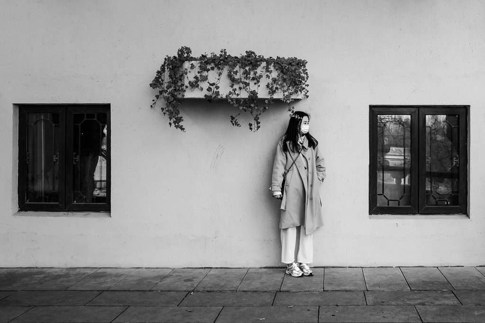
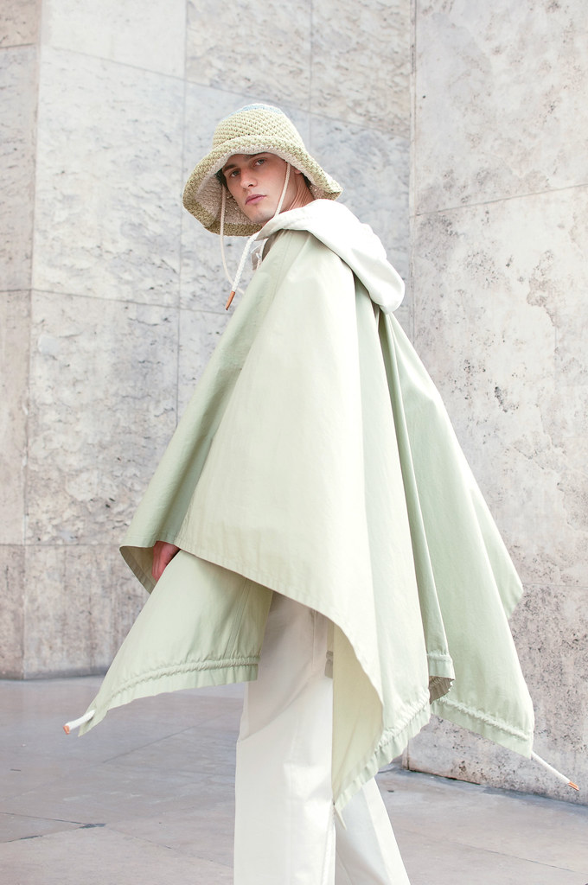
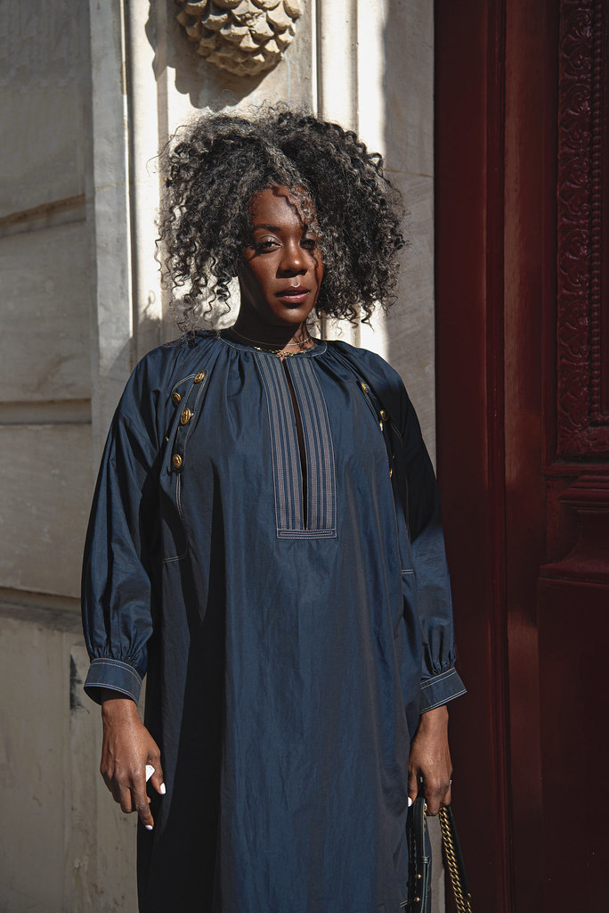
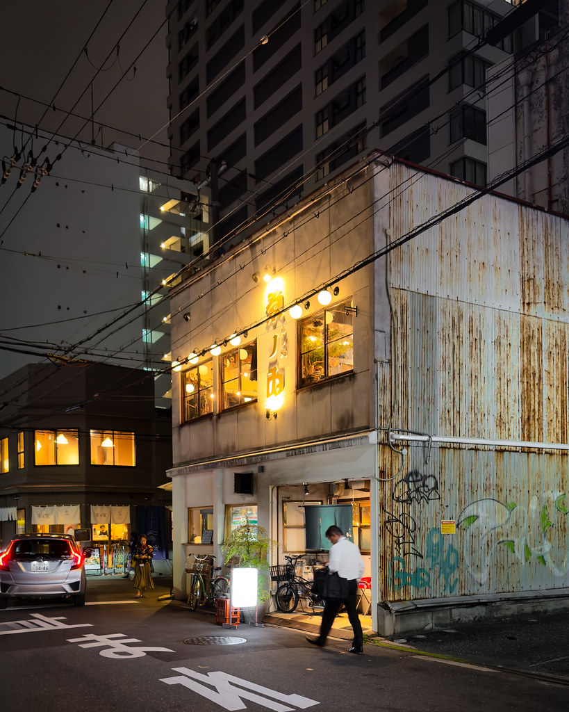
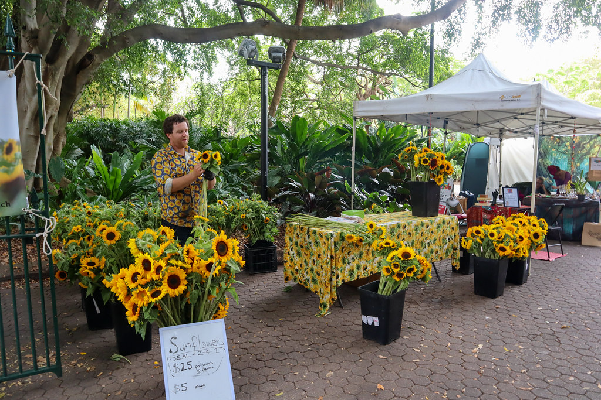
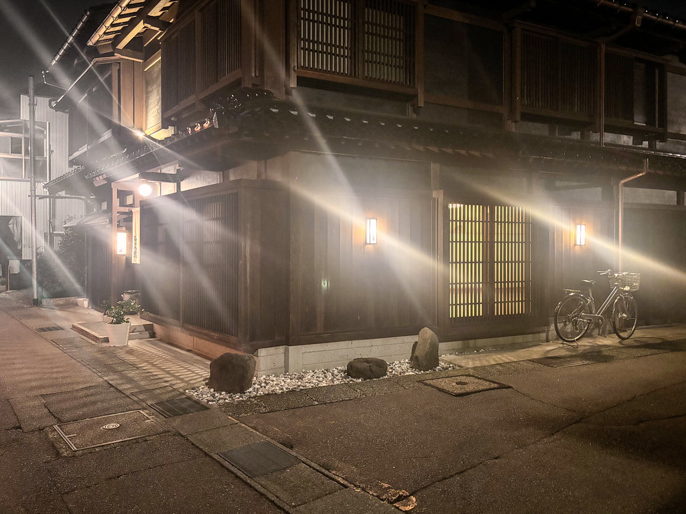
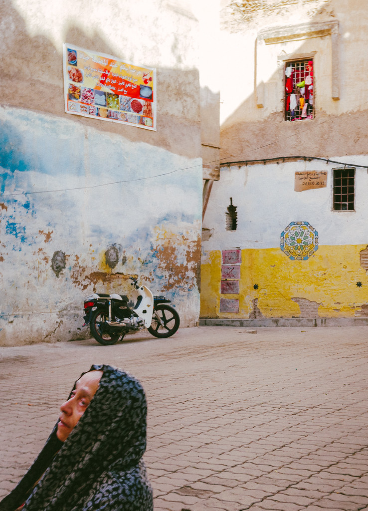

01
Chuyện người
- Năm
- 2021-2024
- Thể loại
- Chân dung tư liệu
- Số ảnh
- 24 ảnh
Những người lạ tôi gặp ở quầy hàng, góc phố, ô cửa bếp. Tôi chờ đến lúc họ quên chiếc máy ảnh để nhìn thấy con người thật.


Nhiếp ảnh gia / Người kể chuyện bằng hình ảnh
Tôi chụp những khoảnh khắc ánh sáng chạm vào con người và nơi chốn, lặng lẽ và chân thật.
Xem tác phẩmBốn series, mỗi series là một căn phòng riêng. Nhấn vào ảnh để xem cỡ lớn, dùng phím mũi tên hoặc vuốt để chuyển ảnh.
01
Những người lạ tôi gặp ở quầy hàng, góc phố, ô cửa bếp. Tôi chờ đến lúc họ quên chiếc máy ảnh để nhìn thấy con người thật.



02
Trang phục như một kiến trúc mềm: nếp vải, bóng đổ và tư thế được dựng chậm rãi dưới ánh sáng tự nhiên.
03
Tôi quay lại một nơi nhiều lần, ở những giờ khác nhau, cho đến khi ánh sáng nói điều mà mắt thường bỏ qua.


04
Những điều nhỏ xảy ra mỗi ngày: một ô cửa sáng đèn, chiếc xe dựng tạm bên tường, một ánh nhìn ngang qua.


Tôi là LUMIÈRE, nhiếp ảnh gia sống và làm việc tại Hà Nội. Mười năm qua, tôi chụp chân dung, thời trang và ảnh tư liệu cho tạp chí, thương hiệu và những người muốn giữ lại một khoảnh khắc thật.
Tôi tin một bức ảnh tốt bắt đầu từ sự chú tâm: lắng nghe người trước ống kính, chờ ánh sáng đổi hướng, để không gian tự kể phần của nó. Tôi ưu tiên ánh sáng tự nhiên, bố cục tiết chế và màu sắc trung thực.
Cảm hứng của tôi đến từ điện ảnh châu Á, hội họa cổ điển và những buổi sáng sớm ở chợ. Với mỗi dự án, tôi dành thời gian trò chuyện trước khi bấm máy, vì khi con người thấy thoải mái, ánh sáng mới thật sự có ý nghĩa.
LUMIÈRE, Hà Nội
Nội dung minh họa, sẽ thay bằng dữ liệu thật của tác giả
2024 đến nay
Chân dung cá nhân, chiến dịch thời trang và ảnh biên tập cho các ấn phẩm in và số.
2020-2024
Thực hiện phóng sự ảnh về con người và đô thị, chụp chân dung nhân vật cho chuyên mục hằng tháng.
2018-2020
Dựng ánh sáng cho các buổi chụp sản phẩm và thời trang, học cách làm việc cùng ê-kíp lớn.
Dẫn dắt người được chụp thả lỏng, tìm góc ánh sáng hợp với gương mặt và câu chuyện riêng.
Lên ý tưởng, chọn bối cảnh và phối hợp cùng stylist, trang điểm, người mẫu.
Quan sát dài hơi, kể chuyện bằng chuỗi ảnh, tôn trọng nhân vật và bối cảnh.
Làm chủ ánh sáng tự nhiên và đèn studio, từ một nguồn sáng đơn đến sơ đồ nhiều đèn.
Xây dựng bảng màu nhất quán cho cả series, giữ tông da tự nhiên.
Chọn ảnh, retouch tiết chế và chuẩn bị tệp cho in ấn lẫn hiển thị số.
Thiết bị: máy ảnh full-frame, ba ống kính một tiêu cự, đèn flash studio và bộ tản sáng di động.
Tóm tắt quá trình học tập và làm việc. Nội dung đang là bản minh họa.
Tệp CV đang được cập nhật, nút sẽ hoạt động khi có tệp thật.
2013-2017
Cử nhân Mỹ thuật ứng dụng, chuyên ngành Nhiếp ảnh.
2019
Khóa học ngắn hạn về ánh sáng chân dung và thời trang.
2024 đến nay
Nhiếp ảnh gia tự do: chân dung, thời trang, ảnh biên tập.
2020-2024
Phóng viên ảnh tại một tạp chí đời sống.
2018-2020
Trợ lý ánh sáng tại studio quảng cáo.
2023
Workshop kể chuyện bằng chuỗi ảnh tư liệu.
2022
Diễn giả khách mời buổi chia sẻ về ảnh chân dung ánh sáng tự nhiên.
2025
Triển lãm cá nhân đầu tiên "Nơi chốn & Ánh sáng".
2023
Vào vòng chung khảo một giải ảnh tư liệu khu vực.
Chuyện người
Chuỗi chân dung tư liệu về người lao động đô thị, thực hiện trong ba năm.
Thời trang
Lookbook mùa hè cho một thương hiệu may mặc trong nước.
Thường phản hồi trong 2 ngày làm việc.